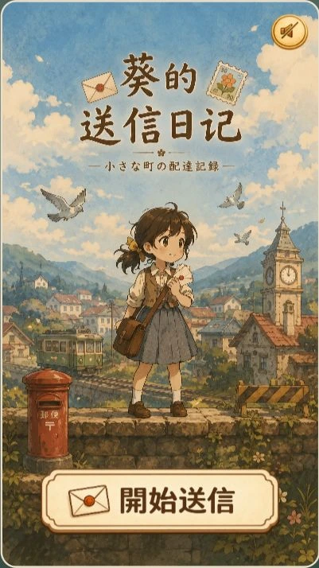
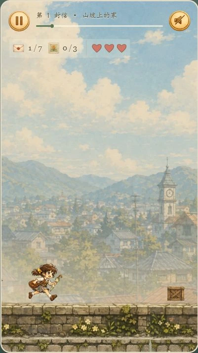
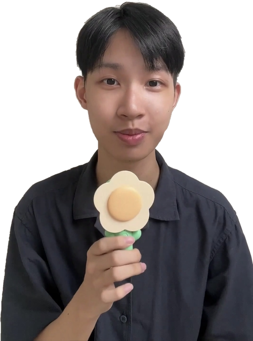
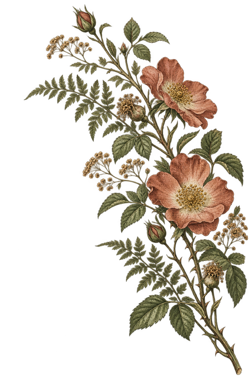
三件作品，看看角色、陪伴與日常想法如何成形。


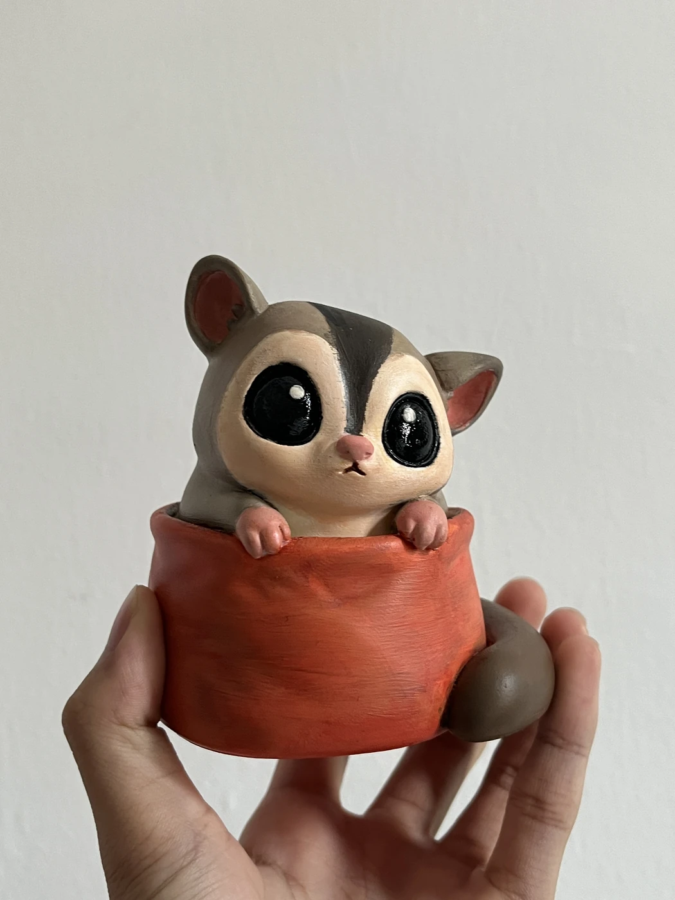
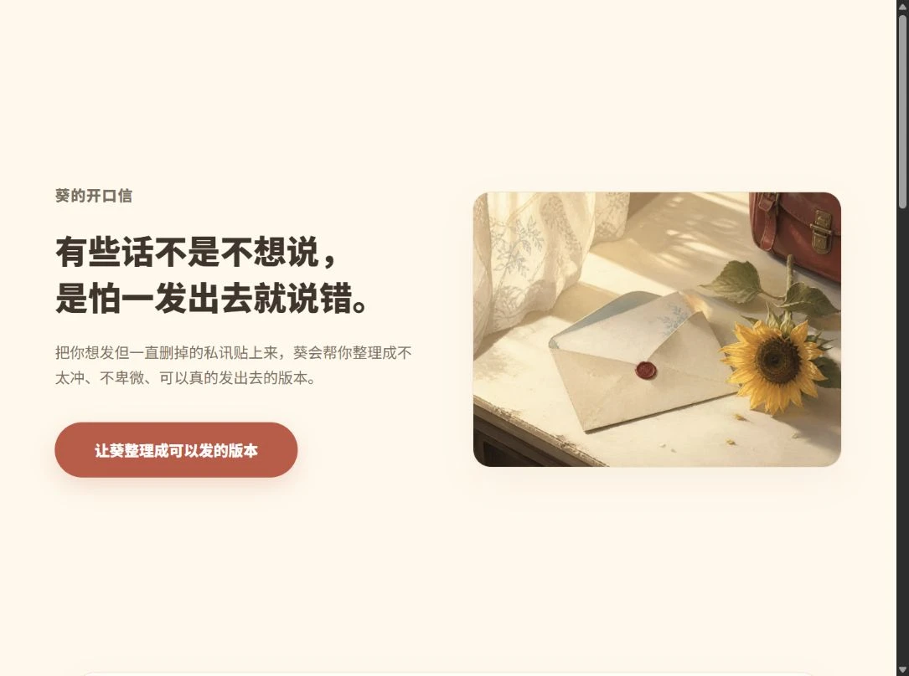
12 WORKS
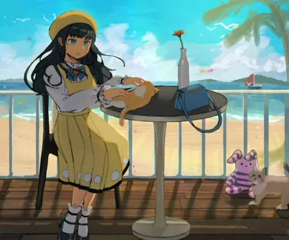
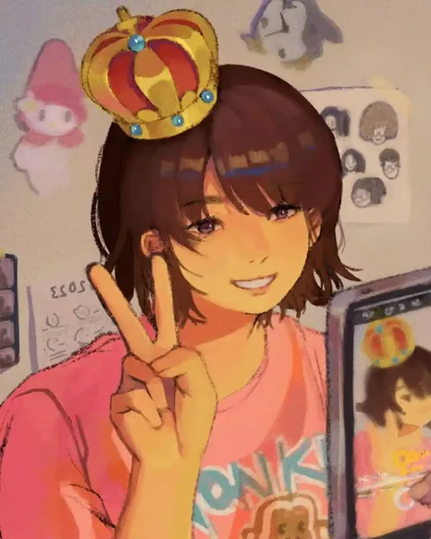
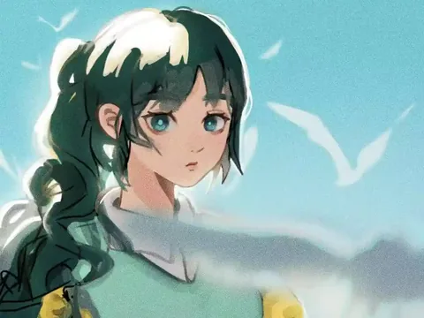
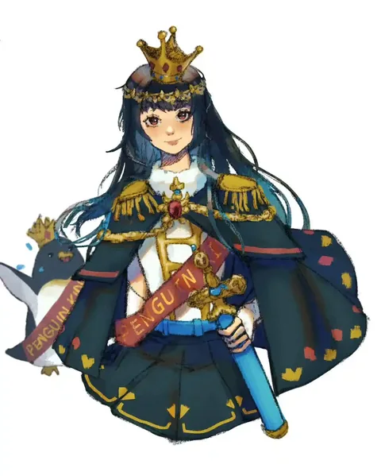
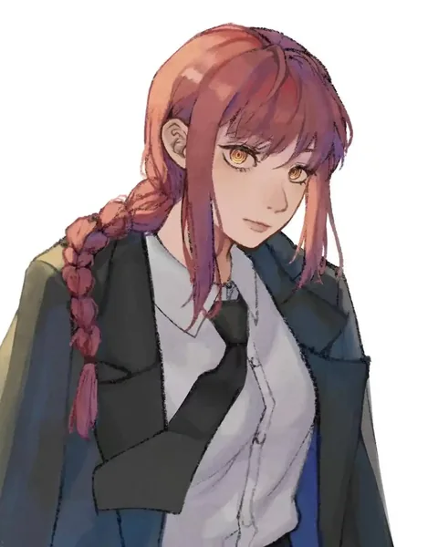
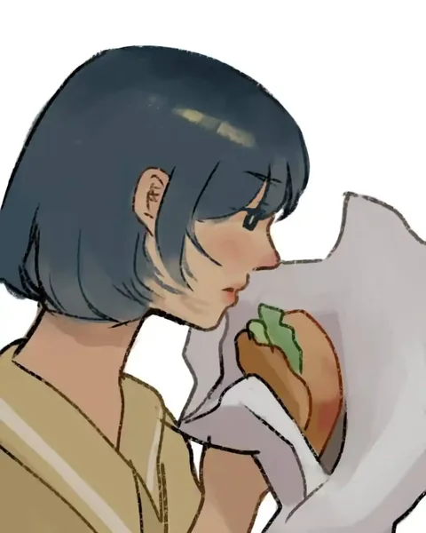
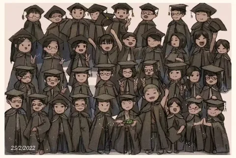
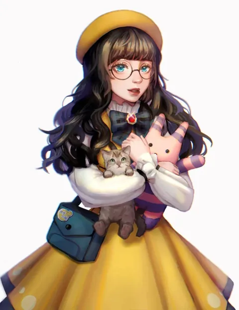
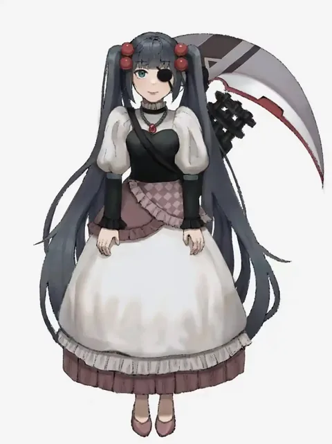
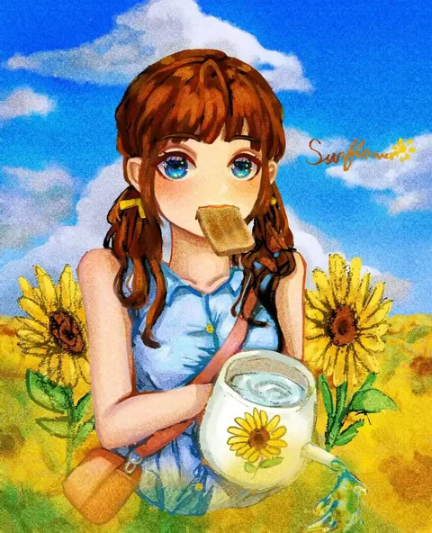
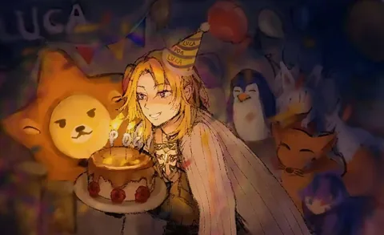
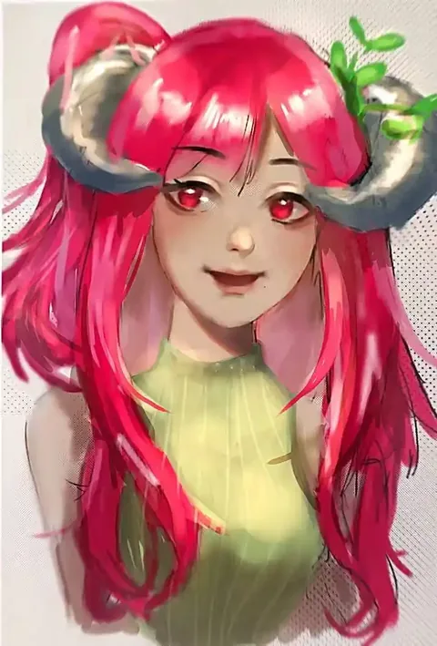
把反覆遇到的小困擾，做成可以試用的網頁。
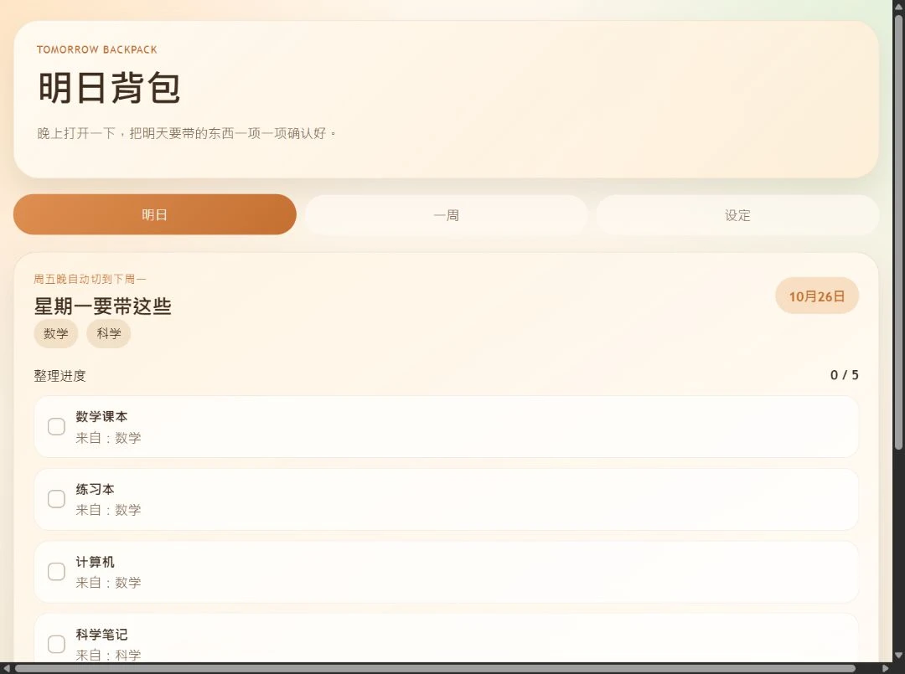
從送給家人的禮物，走到第一件付費委託。
姐姐的同事因為喜歡 Pouch Pet 而提出委託；我以白貓角色，完成這件桌寵產品。
桌寵成品 · 僅展示
2025 年的兩次練習，保留開始、挑戰、失敗與再試一次。
我是梁嘉偉，創作時叫玖葵，來自馬來西亞。目前 17 歲、就讀中五。我從畫畫開始，逐漸嘗試遊戲、桌寵、日常工具與實體模型。
我喜歡把畫裡的角色，做成可以玩、也能拿在手裡的作品。做日常工具時，也希望它好看、好用，能幫上一點忙。
邊做，
邊學。
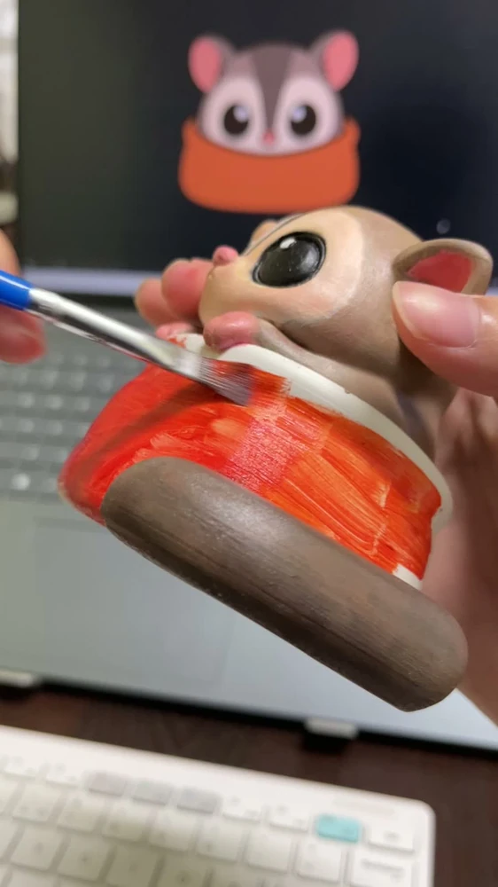
先讓 AI 協助做出能運作的版本，再親自試用、比較與調整。畫面、操作、功能是不是必要，都會在製作過程中反覆檢查。
除了好看，我還會問：別人會想再玩一次、再用一次嗎？這是我繼續修改作品時，檢查自己的問題。
我也希望，這些作品能在某些時候，帶給人一點鼓勵。
在 Instagram 看後續創作；如果你也在做角色、遊戲或日常小工具，或有想一起實現的點子，歡迎寫信聊聊。
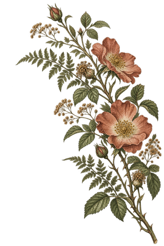